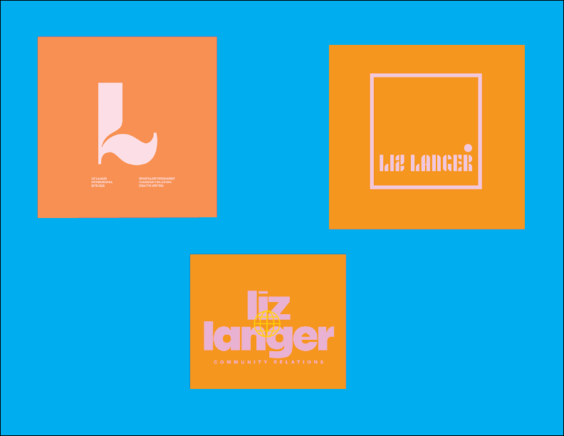
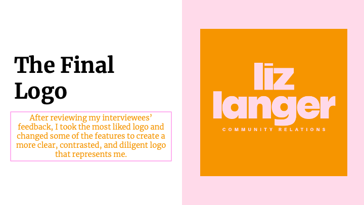

Design Beginnings
Logo A/B/C

These are my three logos, made using AI.
UX Testing Logo Project

This is the results of my UX Design Study, conducted in January of 2026.
Cartoon Portrait

This is my best attempt at a cartoon portrait.